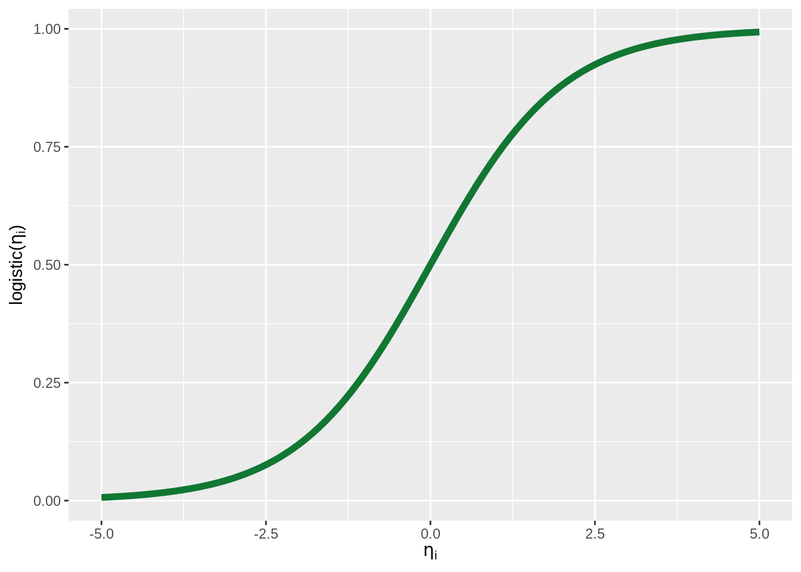

15.2 Logistic regression
Suppose \(y \in \{0,1\}^n\) is an \(n\)-placed vector of binary outcomes, and \(X\) a predictor matrix for a linear regression model. A Bayesian logistic regression model has the following form:
\[ \begin{align*} \beta, \sigma & \sim \text{some prior} \\ \xi & = X \beta && \text{[linear predictor]} \\ \eta_i & = \text{logistic}(\xi_i) && \text{[predictor of central tendency]} \\ y_i & \sim \text{Bernoulli}(\eta_i) && \text{[likelihood]} \\ \end{align*} \] The logistic function used as a link function is a function in \(\mathbb{R} \rightarrow [0;1]\), i.e., from the reals to the unit interval. It is defined as:
\[\text{logistic}(\xi_i) = (1 + \exp(-\xi_i))^{-1}\] It’s shape (a sigmoid, or S-shaped curve) is this:

We use the Simon task data as an example application. So far we only tested the first of two hypotheses about the Simon task data, namely the hypothesis relating to reaction times. The second hypothesis which arose in the context of the Simon task refers to the accuracy of answers, i.e., the proportion of “correct” choices:
\[
\text{Accuracy}_{\text{correct},\ \text{congruent}} > \text{Accuracy}_{\text{correct},\ \text{incongruent}}
\]
Notice that correctness is a binary categorical variable.
Therefore, we use logistic regression to test this hypothesis.
Here is how to set up a logistic regression model with brms.
The only thing that is new here is that we specify explicitly the likelihood function and the (inverse!) link function.69
This is done using the syntax family = bernoulli(link = "logit").
For later hypothesis testing we also use proper priors and take samples from the prior as well.
fit_brms_ST_Acc = brm(
# regress 'correctness' against 'condition'
formula = correctness ~ condition,
# specify link and likeihood function
family = bernoulli(link = "logit"),
# which data to use
data = aida::data_ST %>%
# 'reorder' answer categories (making 'correct' the target to be explained)
mutate(correctness = correctness == 'correct'),
# weakly informative priors (slightly conservative)
# for `class = 'b'` (i.e., all slopes)
prior = prior(student_t(1, 0, 2), class = 'b'),
# also collect samples from the prior (for point-valued testing)
sample_prior = 'yes',
# take more than the usual samples (for numerical stability of testing)
iter = 20000
)The Bayesian summary statistics of the posterior samples of values for regression coefficients are:
## l-95% CI Estimate u-95% CI
## Intercept 3.1067020 3.2042928 3.3059530
## conditionincongruent -0.8496013 -0.7260651 -0.6050912What do these specific numerical estimates for coefficients mean? The mean estimate for the linear predictor \(\xi_\text{cong}\) for the “congruent” condition is roughly 3.204. The mean estimate for the linear predictor \(\xi_\text{inc}\) for the “incongruent” condition is roughly 3.204 + -0.726, so roughly 2.478. The central predictors corresponding to these linear predictors are:
\[ \begin{align*} \eta_\text{cong} & = \text{logistic}(3.204) \approx 0.961 \\ \eta_\text{incon} & = \text{logistic}(2.478) \approx 0.923 \end{align*} \]
These central estimates for the latent proportion of “correct” answers in each condition tightly match the empirically observed proportion of “correct” answers in the data:
proportions_correct_ST <- aida::data_ST %>%
group_by(condition, correctness) %>%
dplyr::count() %>%
group_by(condition) %>%
mutate(proportion_correct = (n / sum(n)) %>% round(3)) %>%
filter( correctness == "correct") %>%
select(-n, -correctness)
proportions_correct_ST## # A tibble: 2 × 2
## # Groups: condition [2]
## condition proportion_correct
## <chr> <dbl>
## 1 congruent 0.961
## 2 incongruent 0.923Testing hypothesis for a logistic regression model is the exact same as for a standard regression model. And so, we find very strong support for hypothesis 2, suggesting that (given model and data), there is reason to believe that the accuracy in incongruent trials is lower than in congruent trials.
## Hypothesis Tests for class b:
## Hypothesis Estimate Est.Error CI.Lower CI.Upper Evid.Ratio
## 1 (conditionincongr... < 0 -0.73 0.06 -0.83 -0.62 Inf
## Post.Prob Star
## 1 1 *
## ---
## 'CI': 90%-CI for one-sided and 95%-CI for two-sided hypotheses.
## '*': For one-sided hypotheses, the posterior probability exceeds 95%;
## for two-sided hypotheses, the value tested against lies outside the 95%-CI.
## Posterior probabilities of point hypotheses assume equal prior probabilities.Anscombe, F. J. 1973. “Graphs in Statistical Analysis.” The American Statistician 27 (1): 17–21. https://doi.org/10.2307/2682899.
Box, George E. P. 1979. “Robustness in the Strategy of Scientific Model Building.” In Robustness in Statistics, edited by R. L. Launer and G. N. Wilkinson, 201–36. Cambridge, MA: Academic Press.
Burkner, Paul-Christian. 2017. “brms: An R Package for Bayesian Multilevel Models Using Stan.” Journal of Statistical Software 80 (1): 1–28. https://doi.org/10.18637/jss.v080.i01.
Burnham, Kenneth P., and David R. Anderson. 2002. Model Selection and Multimodel Inference: A Practical Information-Theoretic Approach. Berlin: Springer.
Carpenter, Bob, Andrew Gelman, Matthew D. Hoffman, Daniel Lee, Ben Goodrich, Michael Betancourt, Marcus Brubaker, Jiqiang Guo, Peter Li, and Allen Riddell. 2017. “Stan: A Probabilistic Programming Language.” Journal of Statistical Software 76 (1). https://doi.org/10.18637/jss.v076.i01.
Franke, Michael, and Timo B. Roettger. 2019. “Bayesian Regression Modeling (for Factorial Designs): A Tutorial.”
Gelman, Andrew, John B. Carlin, Hal S. Stern, David B. Dunson, Aki Vehtari, and Donald B. Rubin. 2014. Bayesian Data Analysis. Chapman; Hall/CRC.
Goodman, Noah D, and Andreas Stuhlmüller. 2014. “The Design and Implementation of Probabilistic Programming Languages.” http://dippl.org.
Gronau, Quentin F., Alexander Ly, and Eric-Jan Wagenmakers. 2019. “Informed Bayesian T-Tests.” The American Statistician.
Gronau, Quentin F., Alexandra Sarafoglou, Dora Matzke, Alexander Ly, Udo Boehm, Maarten Marsman, David S. Leslie, Jonathan J. Forster, Eric-Jan Wagenmakers, and Helen Steingroever. 2017. “A Tutorial on Bridge Sampling.” Journal of Mathematical Psychology 81: 80–97.
Halpern, Joseph Y. 2003. Reasoning about Uncertainty. MIT Press.
Jaeger, T. Florian. 2008. “Categorical Data Analysis: Away from ANOVAs (Transformation or Not) and Towards Logit Mixed Models.” Journal of Memory and Language 59: 434–46.
Klugkist, Irene, Bernet Kato, and Herbert Hoijtink. 2005. “Bayesian Model Selection Using Encompassing Priors.” Statistica Neelandica 59 (1): 57–69.
Kruschke, John. 2015. Doing Bayesian data analysis: A tutorial with R, JAGS, and Stan. Academic Press.
Lee, Michael D., and Eric-Jan Wagenmakers. 2014. Bayesian cognitive modeling: A practical course. Cambridge university press.
Mithat Gonen, Yonggang Lu & Peter H. Westfall, Wesley O. Johnson. 2005. “The Bayesian Two-Sample T-Test.” The American Statistician 59 (3): 252–57. https://doi.org/10.1198/000313005X55233.
Myung, In Jae. 2003. “Tutorial on Maximum Likelihood Estimation.” Journal of Mathematical Psychology 47: 90–100.
Oh, Man-Suk. 2014. “Bayesian Comparison of Models with Inequality and Equality Constraints.” Statistics and Probability Letters 84: 176–82.
Olive, David J. 2017. Linear Regression. Springer International Publishing.
R Core Team. 2018. R: A Language and Environment for Statistical Computing. Vienna, Austria: R Foundation for Statistical Computing. https://www.R-project.org/.
Rouder, Jeffrey N., and Richard D. Morey. 2012. “Default Bayes Factors for Model Selection in Regression.” Multivariate Behavioral Research 47 (6): 877–903.
Rouder, Jeffrey N., Paul l. Speckman, Dongchu Sun, Richard D. Morey, and Geoffrey Iverson. 2009. “Bayesian T Tests for Accepting and Rejecting the Null Hypothesis.” Psychonomic Bulletin & Review 16 (2): 225–37.
Tufte, Edward. 1983. The Visual Display of Quantitative Information. Graphics Press.
Wagenmakers, Eric-Jan, and Simon Farrell. 2004. “AIC Model Selection Using Akaike Weights.” Psychonomic Bulletin & Review 11 (1): 192–96.
Wetzels, Ruud, Raoul P. P. P. Grasman, and Eric-Jan Wagenmakers. 2010. “An Encompassing Prior Generalization of the Savage–Dickey Density Ratio.” Computational Statistics and Data Analysis 54: 2094–2102.
Wickham, Hadley. 2010. “A Layered Grammar of Graphics.” Journal of Computational and Graphical Statistics 19 (1): 3–28.
———. 2014. “Tidy Data.” Journal of Statistical Software 59 (10).
———. 2017. tidyverse: Easily Install and Load the ’Tidyverse’. https://CRAN.R-project.org/package=tidyverse.
Wickham, Hadley, and Garrett Grolemund. 2016. R for Data Science: Import, Tidy, Transform, Visualize, and Model Data. O’Reilly Media, Inc.
Notice that the logit function is the inverse of the logistic function.↩︎